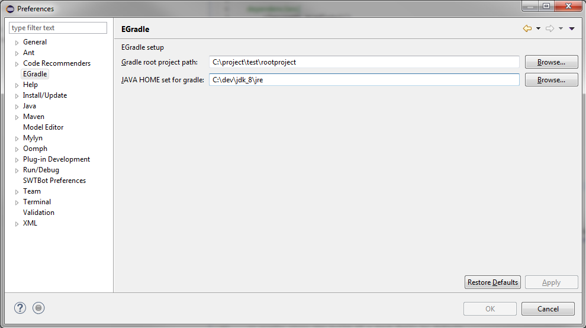
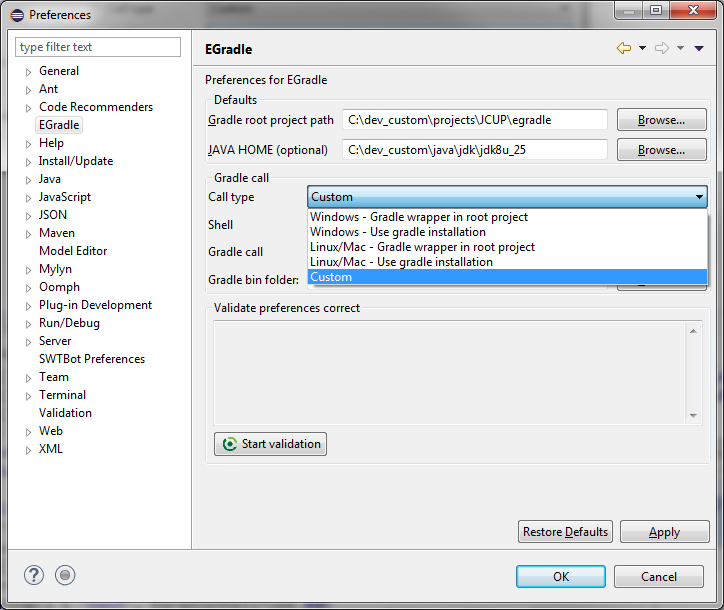
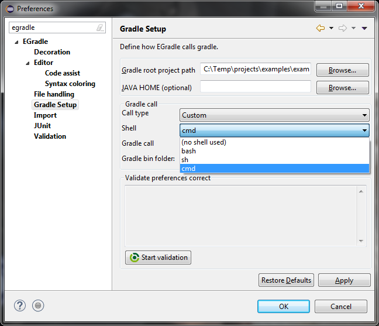
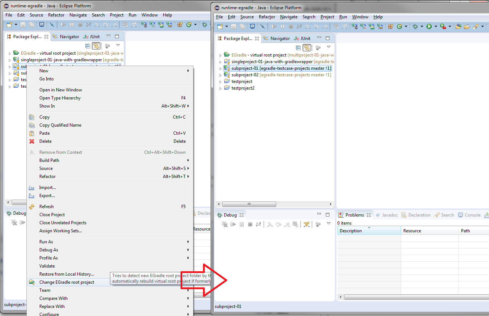

User guide
User guide
Setup
Preferences
Go to preferences, search for EGradle settings, setup your root project
path and (optional) the default JAVA_HOME to set for gradle wrapper.

Defaults
Inside this area you can define
- Gradle root project path
- JAVA_HOME - an optional setup which is available for all your
launch configurations
Call types
Default
Per default EGradle will setup your call type initial with OS dependent
gradle wrapper call type - in the picture before for windows.
Predefined types

You got multiple options for pre defined call types which you
can select.
Custom type
Also a custom variant is possible where you can customize your gradle
call.
Shell selection
It is possible to select one of the supported shell commands

Validation
Press the "Start validation" button to check if your current gradle
settings are working fine.
Top
On projects not being part of current gradle root project you are able to change EGradle root project
settings by simply calling context menu action "Change Egradle root project" (see next picture).
After action is triggered, EGradle tries to identify root project, set new root folder in preferences automatically
and recreates virtual root project if formerly active.

Top
Validation